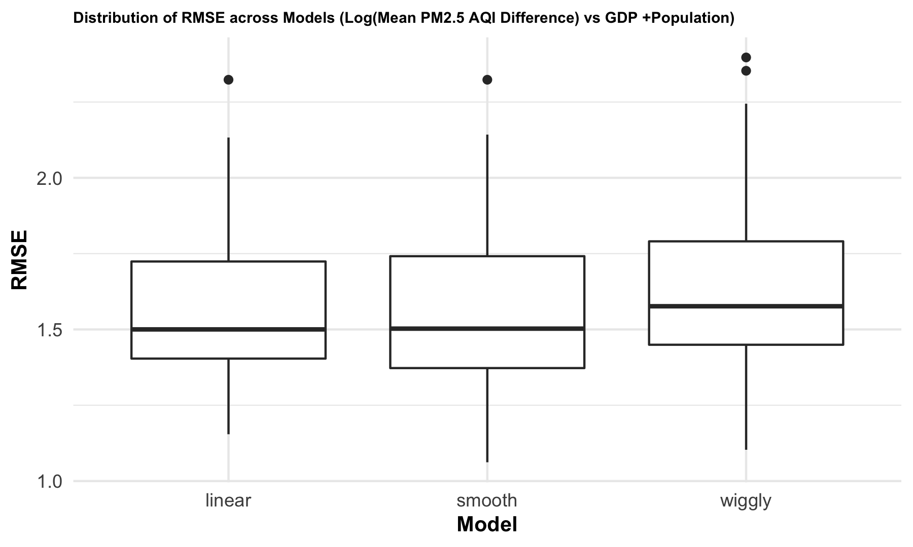
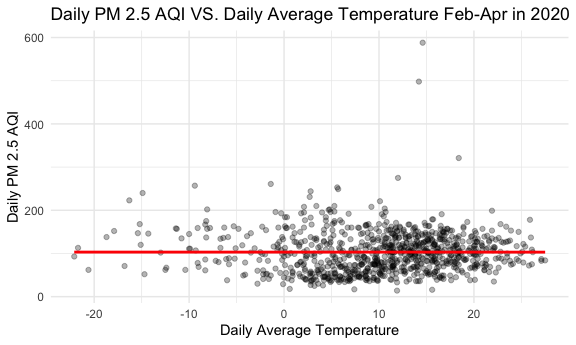

Regression Analysis
Lin Yang 11/20/2021
Create a data frame for regression analysis
Load and clean air quality datasets for 100 cities.
city_100_df = tibble(
file = list.files("100_cities_data")) %>%
mutate(
city = str_remove(file, "-air-quality.csv"),
path = str_c("100_cities_data/", file),
data = map(path, read_csv)
) %>%
unnest(data) %>%
select(-file, -path) %>%
mutate(
city = str_to_title(city),
date = as.Date(date, format = "%Y/%m/%d"))Select pm2.5 AQI during the lockdown period (Feb-Apr) for both 2019 and 2020.
pm25_2020 =
city_100_df %>%
filter(date > "2020-01-31" & date < "2020-05-01") %>%
rename(pm25_2020 = pm25) %>%
mutate(date = format(date, format = "%m-%d")) %>%
select(city, date, pm25_2020)
pm25_2019 =
city_100_df %>%
filter(date > "2019-01-31" & date < "2019-05-01") %>%
rename(pm25_2019 = pm25) %>%
mutate(date = format(date, format = "%m-%d")) %>%
select(city, date, pm25_2019)Calculate daily pm2.5 AQI differences between 2019 and 2020 for each city.
pm25_diff =
left_join(pm25_2020, pm25_2019, by = c("city", "date")) %>%
drop_na() %>%
mutate(pm25_diff = pm25_2019 - pm25_2020) %>%
group_by(city) %>%
summarize(mean_diff = mean(pm25_diff, na.rm = T))
pm25_diff## # A tibble: 100 × 2
## city mean_diff
## <chr> <dbl>
## 1 Anyang 45.5
## 2 Baoding 28.4
## 3 Baotou 6.53
## 4 Beijing 16.0
## 5 Cangzhou 23.3
## 6 Changchun 1.18
## 7 Changde 1.61
## 8 Changsha 4.03
## 9 Changzhou 27.1
## 10 Chengdu 10.5
## # … with 90 more rowsLoad the gdp and population dataset and join it to pm25_diff.
gdp_pop_df =
read_csv("data/gpd_and_popluation.csv") %>%
janitor::clean_names() %>%
mutate(pop_ln = log(population_thousand, base = exp(1)),
gdp_ln = log(gdp_billion, base = exp(1))) %>%
select(city, gdp_ln, pop_ln)
diff_gdp_pop_df = left_join(pm25_diff, gdp_pop_df)
diff_gdp_pop_df## # A tibble: 100 × 4
## city mean_diff gdp_ln pop_ln
## <chr> <dbl> <dbl> <dbl>
## 1 Anyang 45.5 5.65 8.55
## 2 Baoding 28.4 5.96 9.37
## 3 Baotou 6.53 5.69 7.97
## 4 Beijing 16.0 8.17 9.99
## 5 Cangzhou 23.3 5.88 8.93
## 6 Changchun 1.18 6.38 8.99
## 7 Changde 1.61 5.89 8.67
## 8 Changsha 4.03 7.14 9.01
## 9 Changzhou 27.1 6.61 8.56
## 10 Chengdu 10.5 7.44 9.70
## # … with 90 more rowsWe learned that air quality improvement in a city may correlates to the city’s GDP and population, so we created a data frame containing mean pm2.5 AQI differences between 2019 and 2020, GDP and population in 2019 for 100 representative cities. The resulting data frame of diff_gdp_pop_df contains 100 observations of 4 variables. Each row represents one unique city. Below are key variables: city: city name mean_diff mean pm2.5 AQI difference during the lockdown period (Feb-Apr) between 2019 and 2020. gdp_ln: log of 2019 GDP in billions pop_ln: log of 2019 population in thousands
Fit linear models
fit = lm(mean_diff ~gdp_ln + pop_ln, data = diff_gdp_pop_df)
summary(fit)##
## Call:
## lm(formula = mean_diff ~ gdp_ln + pop_ln, data = diff_gdp_pop_df)
##
## Residuals:
## Min 1Q Median 3Q Max
## -22.9298 -9.3085 -0.2823 9.0568 30.3316
##
## Coefficients:
## Estimate Std. Error t value Pr(>|t|)
## (Intercept) -4.6251 19.5716 -0.236 0.814
## gdp_ln -0.8938 2.3591 -0.379 0.706
## pop_ln 2.9034 3.0895 0.940 0.350
##
## Residual standard error: 11.16 on 94 degrees of freedom
## (3 observations deleted due to missingness)
## Multiple R-squared: 0.0111, Adjusted R-squared: -0.009941
## F-statistic: 0.5275 on 2 and 94 DF, p-value: 0.5918fit %>%
broom::tidy() %>%
select(term, estimate, p.value) %>%
knitr::kable(digit = 3)| term | estimate | p.value |
|---|---|---|
| (Intercept) | -4.625 | 0.814 |
| gdp_ln | -0.894 | 0.706 |
| pop_ln | 2.903 | 0.350 |
After fitting a linear model for mean pm2.5 AQI difference dependent on gdp_ln and pop_ln, gdp_ln variable has a slope of -0.894 and pop_ln variable has a slope of 2.903. However, p values of the two linear models are both very large. Therefore, we don’t have enough evidence to support that air quality improvement has a linear relation with GDP and population.
Model Diagnostics
diff_gdp_pop_df %>%
modelr::add_residuals(fit) %>%
ggplot(aes(x = gdp_ln, y = resid)) + geom_violin()
diff_gdp_pop_df %>%
modelr::add_residuals(fit) %>%
ggplot(aes(x = pop_ln, y = resid)) + geom_violin()
Cross Validation
Fit three models for mean_diff vs. gdp_ln.
linear_mod_gdp = lm(mean_diff ~ gdp_ln, data = diff_gdp_pop_df)
smooth_mod_gdp = gam(mean_diff ~ s(gdp_ln), data = diff_gdp_pop_df)
wiggly_mod_gdp = gam(mean_diff ~ s(gdp_ln, k = 30), sp = 10e-6, data = diff_gdp_pop_df)
diff_gdp_pop_df %>%
gather_predictions(linear_mod_gdp, smooth_mod_gdp, wiggly_mod_gdp) %>%
mutate(model = fct_inorder(model)) %>%
ggplot(aes(x = gdp_ln, y = mean_diff)) +
geom_point(alpha = .5) +
geom_line(aes(y = pred), color = "red") +
facet_grid(~model) +
labs(
x = "log(GDP in Billion)",
y = "Mean Daily PM2.5 AQI Difference")
Fit three models for mean_diff vs. pop_ln.
linear_mod_pop = lm(mean_diff ~ pop_ln, data = diff_gdp_pop_df)
smooth_mod_pop = gam(mean_diff ~ s(pop_ln), data = diff_gdp_pop_df)
wiggly_mod_pop = gam(mean_diff ~ s(pop_ln, k = 30), sp = 10e-6, data = diff_gdp_pop_df)
diff_gdp_pop_df %>%
gather_predictions(linear_mod_pop, smooth_mod_pop, wiggly_mod_pop) %>%
mutate(model = fct_inorder(model)) %>%
ggplot(aes(x = pop_ln, y = mean_diff)) +
geom_point(alpha = .5) +
geom_line(aes(y = pred), color = "red") +
facet_grid(~model) +
labs(
x = "log(Population in Thousand)",
y = "Mean Daily PM2.5 AQI Difference")
Cross validation for mean_diff vs. gdp_ln.
cv_df_gdp =
crossv_mc(diff_gdp_pop_df, 100) %>%
mutate(
train = map(train, as_tibble),
test = map(test, as_tibble)) %>%
mutate(
linear_mod = map(train, ~lm(mean_diff ~ gdp_ln, data = .x)),
smooth_mod = map(train, ~mgcv::gam(mean_diff ~ s(gdp_ln), data = .x)),
wiggly_mod = map(train, ~gam(mean_diff ~ s(gdp_ln, k = 30), sp = 10e-6, data = .x))) %>%
mutate(
rmse_linear = map2_dbl(linear_mod, test, ~rmse(model = .x, data = .y)),
rmse_smooth = map2_dbl(smooth_mod, test, ~rmse(model = .x, data = .y)),
rmse_wiggly = map2_dbl(wiggly_mod, test, ~rmse(model = .x, data = .y))) %>%
select(starts_with("rmse")) %>%
pivot_longer(
everything(),
names_to = "model",
values_to = "rmse",
names_prefix = "rmse_")
cv_df_gdp %>%
mutate(model = fct_inorder(model)) %>%
ggplot(aes(x = model, y = rmse)) +
geom_violin(aes(fill = model), alpha = 0.5) +
labs(title = "RMSE vs. Model")
Cross validation for mean_diff vs. pop_ln.
cv_df_pop =
crossv_mc(diff_gdp_pop_df, 100) %>%
mutate(
train = map(train, as_tibble),
test = map(test, as_tibble)) %>%
mutate(
linear_mod = map(train, ~lm(mean_diff ~ pop_ln, data = .x)),
smooth_mod = map(train, ~mgcv::gam(mean_diff ~ s(pop_ln), data = .x)),
wiggly_mod = map(train, ~gam(mean_diff ~ s(pop_ln, k = 30), sp = 10e-6, data = .x))) %>%
mutate(
rmse_linear = map2_dbl(linear_mod, test, ~rmse(model = .x, data = .y)),
rmse_smooth = map2_dbl(smooth_mod, test, ~rmse(model = .x, data = .y)),
rmse_wiggly = map2_dbl(wiggly_mod, test, ~rmse(model = .x, data = .y))) %>%
select(starts_with("rmse")) %>%
pivot_longer(
everything(),
names_to = "model",
values_to = "rmse",
names_prefix = "rmse_")
cv_df_pop %>%
mutate(model = fct_inorder(model)) %>%
ggplot(aes(x = model, y = rmse)) +
geom_violin(aes(fill = model), alpha = 0.5) +
labs(title = "RMSE vs. Model") We then did cross validation for three different kinds of models of mean PM2.5 difference vs. gdp_ln and pop_ln. The scatterplots indicated that none of the three models were good fits. For both gdp_ln and pop_ln, the distribution of RMSE values for each model suggested that linear and smooth models worked better than wiggly model. But the RMSE values of all the three models were significantly large, confirming all of them were bad fits.
Create a data frame containing weather data for regression analysis
Load weather data for 10 representative cities.
weather_df =
rnoaa::meteo_pull_monitors(
c("CHM00054511", "CHM00058362", "CHM00050953", "CHM00054342", "CHM00055591", "CHM00056294", "CHM00056778", "CHM00059287", "CHM00057036", "CHM00057494"),
var = c("PRCP", "TAVG"),
date_min = "2020-02-01",
date_max = "2020-04-30") %>%
mutate(
name = recode(
id,
CHM00054511 = "Beijing",
CHM00058362 = "Shanghai",
CHM00050953 = "Harbin",
CHM00054342 = "Shenyang",
CHM00055591 = "Lasa",
CHM00056294 = "Chengdu",
CHM00056778 = "Kunming",
CHM00059287 = "Guangzhou",
CHM00057036 = "Xian",
CHM00057494 = "Wuhan"),
tavg = tavg / 10,
prcp = prcp / 10) %>%
select(-id) %>%
rename(city = name) %>%
relocate(city)
weather_df## # A tibble: 900 × 4
## city date prcp tavg
## <chr> <date> <dbl> <dbl>
## 1 Beijing 2020-02-01 1 1.6
## 2 Beijing 2020-02-02 0.3 -2.8
## 3 Beijing 2020-02-03 0 -2.6
## 4 Beijing 2020-02-04 0 -4.1
## 5 Beijing 2020-02-05 2.8 -6
## 6 Beijing 2020-02-06 1.3 -6.1
## 7 Beijing 2020-02-07 0 -4.4
## 8 Beijing 2020-02-08 0 -0.6
## 9 Beijing 2020-02-09 0 -0.5
## 10 Beijing 2020-02-10 0 1.8
## # … with 890 more rowsJoin weather_df to the AQI dataset of 10 cities.
city_10_df =
city_100_df %>%
filter(date > "2020-01-31" & date < "2020-05-01") %>%
filter(city %in% c("Beijing", "Shanghai", "Harbin", "Shenyang", "Lasa", "Chengdu", "Kunming", "Guangzhou", "Xian", "Wuhan"))
pm25_tavg_df =
left_join(city_10_df, weather_df, by = c("city", "date")) %>%
arrange(date) %>%
select(city, date, pm25, tavg) %>%
drop_na()
pm25_tavg_df## # A tibble: 794 × 4
## city date pm25 tavg
## <chr> <date> <dbl> <dbl>
## 1 Beijing 2020-02-01 120 1.6
## 2 Chengdu 2020-02-01 120 8.8
## 3 Guangzhou 2020-02-01 84 15.6
## 4 Harbin 2020-02-01 240 -14.9
## 5 Kunming 2020-02-01 75 9.3
## 6 Shanghai 2020-02-01 126 4.9
## 7 Shenyang 2020-02-01 257 -9.4
## 8 Wuhan 2020-02-01 168 10
## 9 Xian 2020-02-01 197 5.3
## 10 Beijing 2020-02-02 30 -2.8
## # … with 784 more rowspm25_tavg_df %>%
ggplot(aes(x = tavg, y = pm25)) +
geom_point() +
labs(
x = "Daily Average Temperature",
y = "Daily PM 2.5 AQI",
title = "Daily PM 2.5 AQI VS. Daily Average Temperature Feb-Apr in 2020"
)Fit a linear model.
fit2 = lm(pm25 ~tavg, data = pm25_tavg_df)
summary(fit2)##
## Call:
## lm(formula = pm25 ~ tavg, data = pm25_tavg_df)
##
## Residuals:
## Min 1Q Median 3Q Max
## -95.51 -31.45 -3.12 26.22 480.43
##
## Coefficients:
## Estimate Std. Error t value Pr(>|t|)
## (Intercept) 113.7598 2.6676 42.645 <2e-16 ***
## tavg -0.4239 0.1963 -2.159 0.0311 *
## ---
## Signif. codes: 0 '***' 0.001 '**' 0.01 '*' 0.05 '.' 0.1 ' ' 1
##
## Residual standard error: 47.51 on 792 degrees of freedom
## Multiple R-squared: 0.005853, Adjusted R-squared: 0.004598
## F-statistic: 4.663 on 1 and 792 DF, p-value: 0.03112